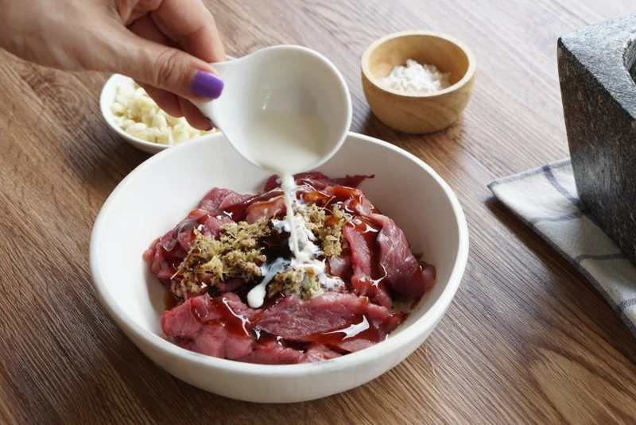
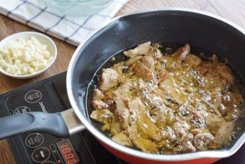
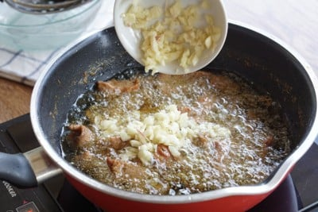
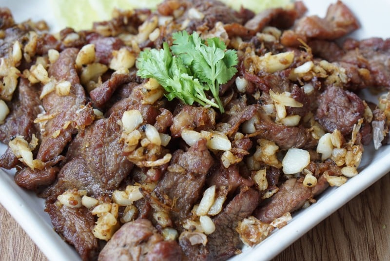

วิธีทำ "หมูทอดกระเทียม"
วัตถุดิบ
- เนื้อหมูสันใน 350 กรัม
- กระเทียมสับ 3 ช้อนโต๊ะ
- น้ำมัน 1 ถ้วยตวง
- สามเกลอ 1 ช้อนโต๊ะ (รากผักชี, กระเทียม, พริกไทย)
- นมสด 2 ช้อนโต๊ะ
- ซอยหอยนางรม 2 ช้อนโต๊ะ
- ซอสปรุงรส 1 ช้อนโต๊ะ
- น้ำปลา 1 ช้อนโต๊ะ
- แป้งมัน 2 ช้อนโต๊ะ
- ซีอิ๊วดำ 1 ช้อนโต๊ะ
วิธีทำ
STEP 1 : หมักหมู
- นำหมูสันในที่หั่นไว้เป็นชิ้นพอดีคำ ทำการหมักกับซอสหอยนางรม ซอสปรุงรส น้ำปลา ซีอิ๊วดำ สามเกลอ แป้งมัน และนมสด
- คลุกเคล้าส่วนผสมให้เข้ากันดี
- ทำการหมักหมูทอดกระเทียมทิ้งไว้ 10 นาที 
ทำการหมักหมูทิ้งไว้ 10 นาที
STEP 2 : ทอด
- ตั้งกระทะไฟกลาง ใส่น้ำมันลงไป ใช้น้ำมันท่วมเนื้อหมู น้ำมันที่ท่วมหมูจะช่วยให้ความร้อนระอุเข้าเนื้อหมู ทำให้เนื้อหมูนุ่มยิ่งขึ้นแถมป้องกันน้ำมันกระเด็นอีกด้วย รอจนน้ำมันร้อน นำหมูที่หมักไว้แล้วใส่ลงไปทอด ทยอยใส่
- รอจนหมูสุก 50 % ค่อยทำการคนนะคะ เพื่อไม่ให้หมูติดกระทะ
- เมื่อหมูเริ่มสุกได้ที่ทั่วถึงกัน ให้ใส่กระเทียมสับตามลงไป ใส่กระเทียมลงทอดตอนหมูใกล้สุกเต็มที่แบบนี้จะช่วยให้กระเทียมไม่ไหม้
- ทอดจนหมูและกระเทียมสุกได้ที่ ใช้ตะแกรงช้อนขึ้นพักไว้ให้สะเด็ดน้ำมัน  
ใช้ไฟกลางในการทอดหมู หมูใกล้สุกได้ที่ใส่กระเทียมลงไป
STEP 3 : จัดเสิร์ฟหมูทอดกระเทียม
- นำหมูกระเทียมใส่จาน ตกแต่งด้วยผักชี ทานคู่กับแตงกวา ขึ้นโต๊ะจัดเสิร์ฟได้เลย 
พร้อมเสิร์ฟหมูทอดกระเทียม!!!